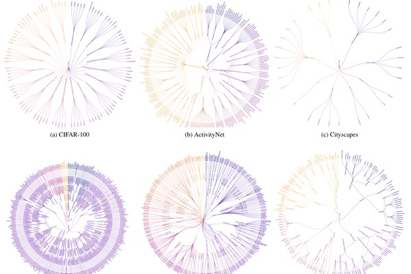
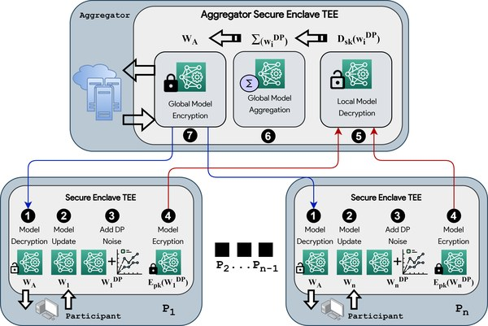
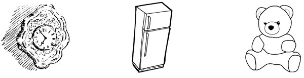

Hello! I'm a PhD Candidate in Computer Vision at the Human-Aligned Video AI Lab (HAVA Lab) in the Informatics Institute at the University of Amsterdam. I am supervised by Prof. Cees Snoek and Prof. Marie Lindegaard.
My dissertation is on human-aligned video AI for public safety, which involves video understanding focused on human interactions and safety (anomaly detection, touch detection, self-supervised learning).
Before the PhD, I led the machine learning work with WWF to map India's tea plantations from satellite imagery, finding where they cut across elephant migration paths and drive human–elephant conflict. I have also worked on neuro-symbolic learning with knowledge graphs at HumaneAI (with UCL and VU Amsterdam), and on privacy-preserving ML and applied cryptography, published at IEEE EuroS&P and CANS.
I hold an M.Sc. in Artificial Intelligence from Vrije Universiteit Amsterdam, where I completed the two-year programme in 10 months and graduated in the top 5% of my cohort, and a B.Sc. (Hons.) in Computer Science from Ashoka University (Magna Cum Laude), where I founded the university's first Women in Data Science conference.
I'm open to research internships and collaborations — please feel free to drop me a message, always happy to connect!
Research Interests: Video Understanding • Human-Aligned Video AI • Video Anomaly Detection • Self-Supervised Learning • Foundation Models for Video • World Models
| Jul 2026 | Invited talk on video AI for public safety to Prof. Jean-Louis van Gelder, Director of the Max Planck Institute for the Study of Crime, Security and Law (Freiburg), and his research group. |
| May 2026 | Invited talk to visiting researchers from across Germany, funded by the German Federal Ministry of Research, Technology and Space. |
| Jul 2026 | Reviewer for ECCV 2026 and its Beyond Euclidean and Video4Real workshops. |
| Sep 2025 | HierVision accepted at the Beyond Euclidean workshop, ICCV 2025! |


